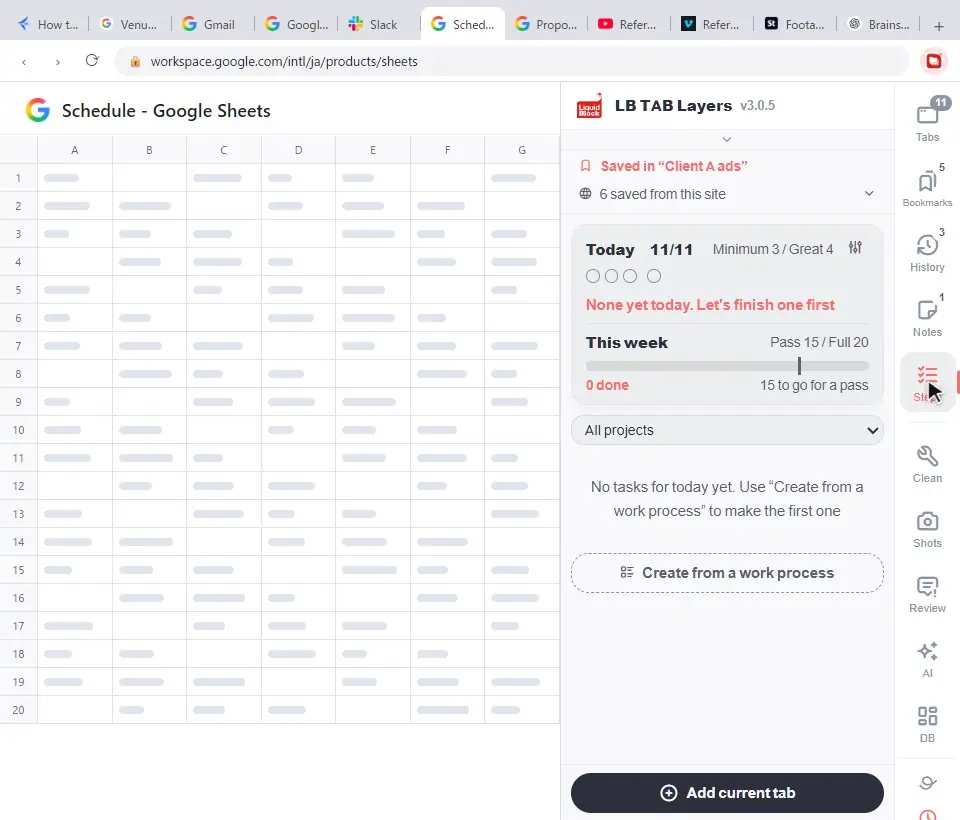
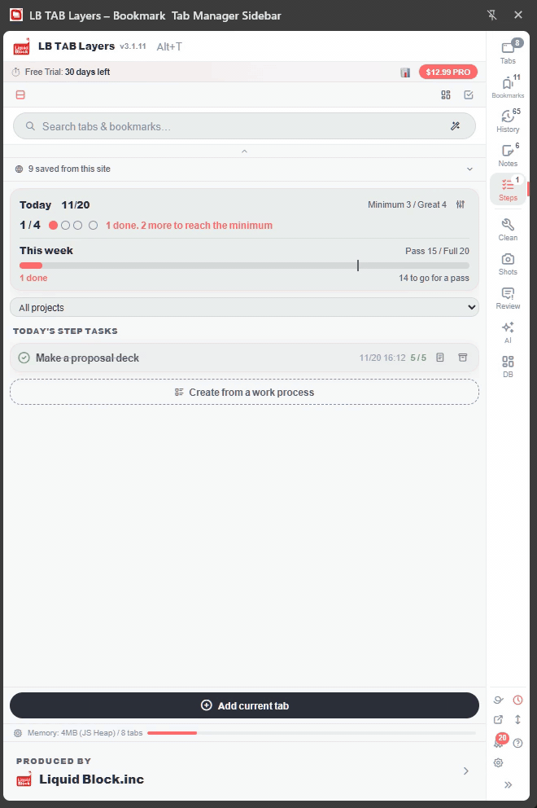

Step tasks in LB TAB Layers split a piece of work into steps, and count it as done only when every step is checked. Open Steps, click Create from a work process, pick one of 34 templates and click Create. You see how many tasks you finished today and this week against your goals, and you can link tasks to a project group. It is a PRO feature, available during the free trial.
“Make the proposal.” Written like that, it is hard to know where to start, and it is easy to keep putting it off. Big work moves slowly. Split into small steps, it gets easier to start and easier to keep going.
Step tasks in LB TAB Layers do exactly that: each task is a short list of steps, and you check them off one by one, in the same side panel where your tabs live.
See it: create from a template, then check off steps
Click Steps in the column at the edge of the panel, then Create from a work process. Pick a template and click Create, and you get a task with its steps already listed. After that, you just check off each step as you finish it.

A task counts only when every step is done
- Each task is made of several steps.
- It counts as one finished task only when every step is checked. Half-done tasks are not counted.
Because “halfway there” doesn’t count, your numbers stay honest. And because each step has its own check box, you can always see how far along a task is.
How do I create a step task?
- Open Steps. Click Steps in the column at the edge of the panel. If you show the mode switcher across the top instead, it is Steps in that bar.
- Click Create from a work process. Choose a template by situation, such as Documents & planning, Sales & clients or Meetings & communication. To write your own steps from scratch, choose Blank task.
- Set the details. Choose the Number of steps, the Target time (min) and the Day to do it (Today or No date). If you have groups, you can also choose a Project.
- Click Create. Then check off each step as you finish it.
You can change the steps and how many there are after creating a task. Add a step adds more. A date is optional: tasks without one go under No date / upcoming.
What templates are included?
There are 34 templates in 9 categories: Documents & planning, Sales & clients, Meetings & communication, Accounting & admin, HR & hiring, Marketing & PR, Projects & development, Research & study and Life. One of the 34 is the Blank task. Most templates start with five steps. A few examples:
| Template | Steps |
|---|---|
| Make a quote / proposal | Confirm requirements → List the items → Add prices → Review → Send |
| Month-end closing | Total sales and payments → Check what is pending → Reconcile the numbers → Get approval → Close and report |
| Weekly review and plan | Review this week’s results → Note what did not go well → Set next week’s priorities → Put them on the calendar → Share |
Other templates include writing a report, preparing for a sales meeting, sending an invoice, preparing for a job interview, planning a campaign, pre-release checks and planning a trip.
Save your own templates
When you have a pattern you use often, click Save as a template on the task. It then appears under My templates, so next time you just pick it. Your templates can be saved to a file with Export and loaded with Import, so you can move them to another computer or hand the same process to a teammate as a file.
Daily and weekly goals you can adjust
The top of the screen shows how many tasks you finished today and this week (Monday to Sunday). The starting goals are:
| Lower line | Upper line | |
|---|---|---|
| Per day | Minimum: 3 | Great: 4 |
| Per week | Pass: 15 | Full marks: 20 |
Change them to match your own pace with Set goals. Each time you finish a task, you see how many are left, for example “Minimum reached (3 done). 1 more for a great day”.

Tasks are sorted into Today’s step tasks, Carried over, No date / upcoming and Completed tasks.
Link a task to a project group
When you create a task, or later, choose a Project to link it to one of your groups. The group’s header then shows how many tasks are still open for it. Look at a group such as “Client A ads” and you know what is left for that job. The task list can also be filtered by project.
This works well with a group per project: save the project’s tabs in the group, track the work as step tasks linked to it, and when you open the group with ▶ in the morning, you also see what is left to do. See groups and subgroups to set up your groups.
Add a task to Google Calendar
A task with a date can become a calendar event with the Add to Google Calendar button.
- It opens Google Calendar’s new-event screen, already filled in with the task name and the list of steps.
- If you set a start time, the event starts then and lasts as long as the step times added together.
- The extension does not write to your calendar. You save the event yourself on the screen that opens, so the extension needs no sign-in and no permission.
- On a task with no date, you see “Set a date to add it to the calendar”.
Good to know
- Your tasks are stored in your browser and are not sent to any server. They are included when you back up with Export in the settings.
- Notes or step tasks? Keep things you want to read again in notes, and work you want to finish in step tasks.
- Step tasks are a PRO feature, available during the free trial. When the trial ends, the tasks you made are kept.
Want to see this and nine other actions moving on screen? Take a look at the operation guide.
Frequently asked questions
Q. Can I use step tasks for free?
Step tasks are a PRO feature, available during the free trial. When the trial ends, the tasks you made are kept.
Q. Does a half-finished task count?
No. A task counts as finished only when every step is checked. You can still see how far along it is from the checked steps.
Q. Do I have to set a date?
No. Tasks without a date go under “No date / upcoming”. A date is only needed to add the task to Google Calendar.
Q. Does Add to Google Calendar need a sign-in or permissions?
Not for the extension. The button opens Google Calendar’s new-event screen with the task name and steps filled in, and you save the event there yourself.
See it in action


Big work, with a visible finish line.
Split it into steps, check them off, and see today’s and this week’s progress in the side panel. Available during the free trial.
Add to Chrome — it's free →